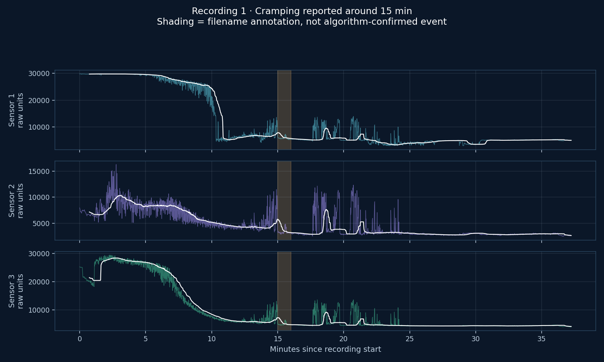
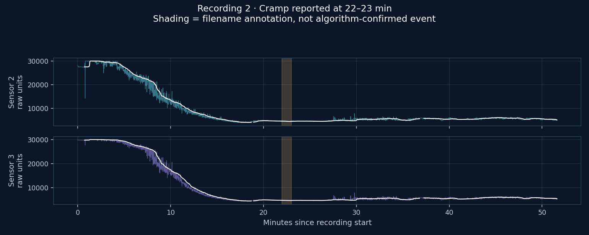
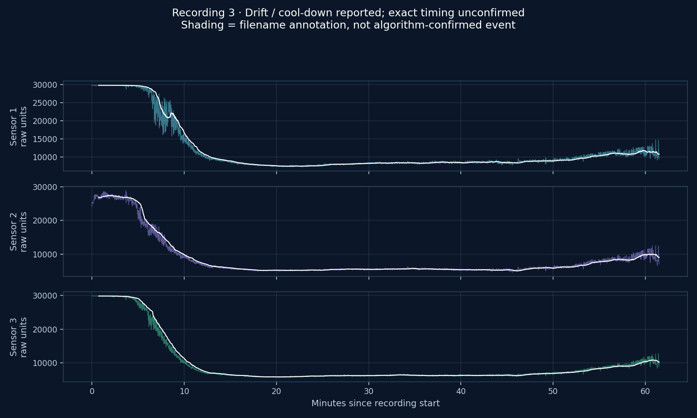
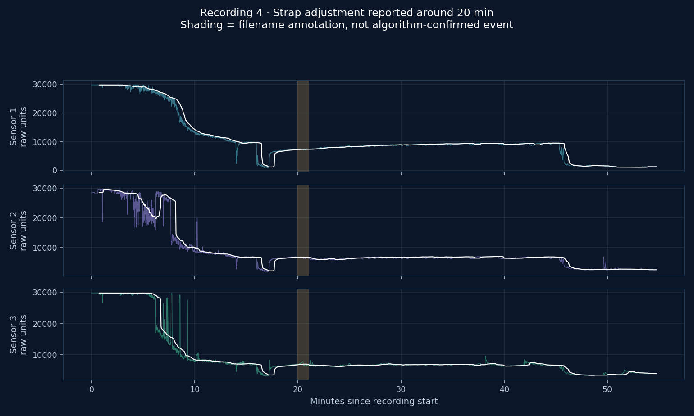
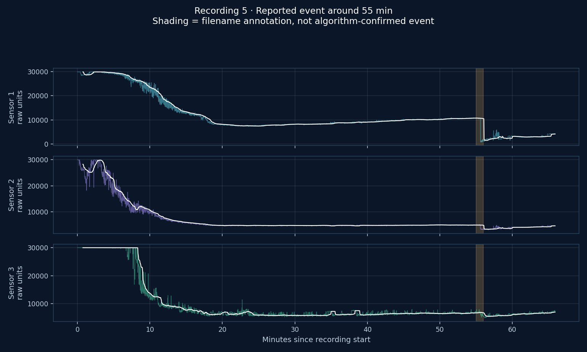

Raw values from legacy two- and three-channel recordings. Filename notes are unconfirmed annotations. No adverse-event diagnosis or pressure threshold is applied.
4 miles- lots of cramping at around 15 min in .txt
37.25 minutes · 3 channels · 9,150 samples · raw units

6 mile run, cramp at 22-23 min.txt
51.62 minutes · 2 channels · 12,679 samples · raw units

6 mile run- good dehydration drift before 1:2 cool down walk (increase pressure).txt
61.5 minutes · 3 channels · 15,108 samples · raw units

6 mile run- strap adjustment at 20 min, then cool down at end (good dehydration drift too).txt
54.74 minutes · 3 channels · 13,448 samples · raw units

7.5 mile run empty stomach- hit wall at 55 min- loss of vascular tone.txt
65.91 minutes · 3 channels · 16,190 samples · raw units
